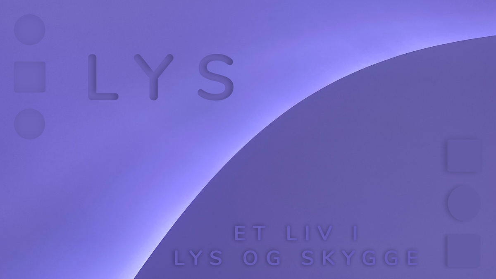

TEMA2

Grundlæggende web
I dette tema, har vi lært basis opsætning i HTML og CSS, ud fra stilarter, og ved hjælpe af adobe.Jeg udarbejdede min v2_rsponsive ud fra stilarten neumorphismen. Denne stilart arbejder med lys/skygge, rene overflader og dæmpet farvepalet. Dette gjorde udfaldet for mit emne valg: lys, som komplimentere godt i kontekst og stilart.
RESPONSIV_V2